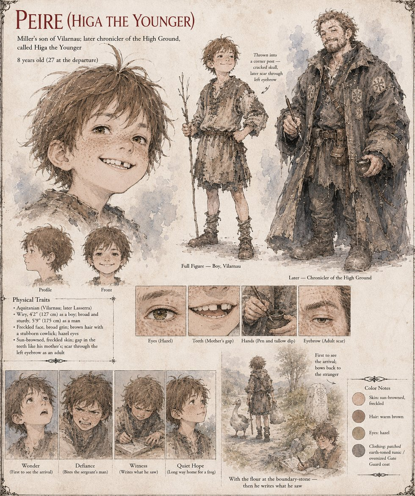

Peire (Higa the Younger)
Miller's son of Vilarnau · later chronicler of the High Ground, called Higa the Younger · 8 at the arrival, 27 at the departure
The miller's son of Vilarnau, eight years old at dusk on the nineteenth of Garren, sent to bring in the geese and, being eight, taking the long way round by the green because the long way contained the possibility of a frog. He stands at the edge of the oak's shadow with a switch in one hand and his mouth slightly open and watches the whole arrival from forty paces: a tall man in strange dark clothes who looks a little embarrassed. The man bows, unhurried and exact, with his hands flat on his thighs, and Peire, who has been taught to bow by a priest and has never seen it done so well, bows back, a moment late, with the unselfconscious thoroughness of a boy imitating something holy. He will tell it for sixty years, and in the telling the man will be made of moonlight and rise out of the stone like steam from a kettle, with eyes like two small coals, while the oak bends and an owl cries; what he saw was a tall man who looked a little embarrassed. He runs to find the reeve, Old Bernat, who says without looking up from his pipe that the last one died.
He is the boy who names the tally-stone the Ishi, the stranger's word for stone, with the relish of a boy saying the name of a new and slightly dangerous friend, so that the green's old block goes by two names at once and then, in the lane's own tongue, becomes the Doorstone. He claps a hand over his mouth to keep from laughing when Sir Bertran is disarmed, and has an alarming interest in swords. By the first snow he is wearing, without knowing what it is, a coat made from an unpicked uniform. On the first of Kerren, told to stay in the kitchen, he follows his mother up the ladder to the loft and goes for the sergeant's man with his teeth when the man lays a hand on the first sack of seed-grain, laying the knuckle open to the bone; he is flung backhanded across the loft into a corner post and lies still with a dark thread of blood coming down through his hair. It is what ends Higaide's vow. He lives, with a cracked skull and a long night, and carries a scar through his left eyebrow for the rest of his life; he goes up to the quarry on Higaide's back, wrapped in a blanket.
On the ridge he helps build the last house on the path. At twenty-seven he is a broad, brown, laughing man with a gap in his teeth, and the first in Lasserra to carry the stranger's name: they call him Higa the Younger. He has been taught to hold a sword and has discovered, with a regret that does him credit, that he prefers a pen, and in the evenings of his thirties he sits by his own hearth with a tallow dip and writes down the whole of what he saw, in a chronicle that will be lost in a later century in a fire at Sant-Rustic. He walks beside Higaide, carrying the flour, as far as the boundary-stone of the charcoal-burners' land on the morning he goes east, and copies the strokes of the heron poem into the margin of his chronicle without a notion of what they say.
The Peire of Case 4181 is a man of twenty-seven of the High Ground who receives Higaide's goodbye before the walk east; the two pages take him to be this man, and the age and the parting agree, though that case's sheet gives him grey eyes and no scar where this one gives hazel eyes and a scar through the left eyebrow. The manuscript gives Peire's age, the switch and the geese, the bow, the bite, the coat, the cracked skull, the scar, the gap, the pen and the name. The sheet's 4 ft 2 in as a boy and 5 ft 9 in as a man, freckles, brown hair with a stubborn cowlick, hazel eyes and the gap in the teeth like his mother's are its own, and so are its expression panels Wonder, Defiance, Witness and Quiet Hope; its small scene, With the flour at the boundary-stone, then he writes what he saw, puts a boy, a goose, a sack and a marked stone together in one frame.